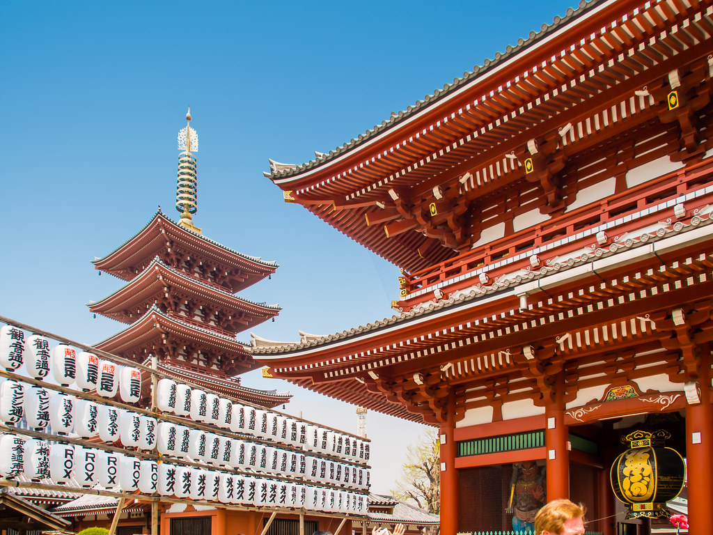
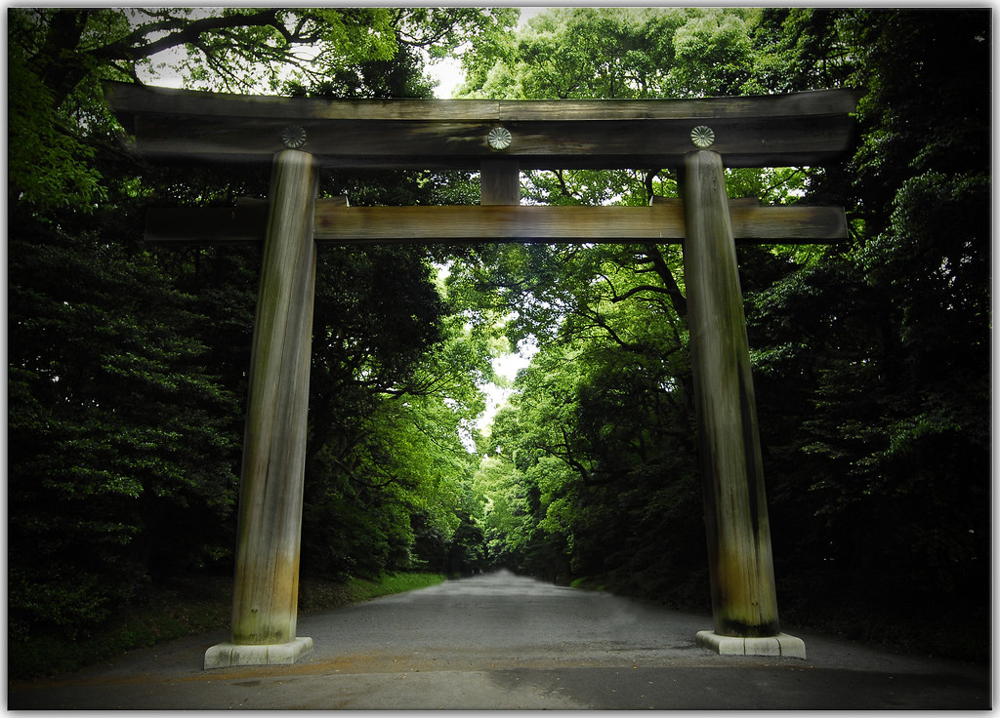
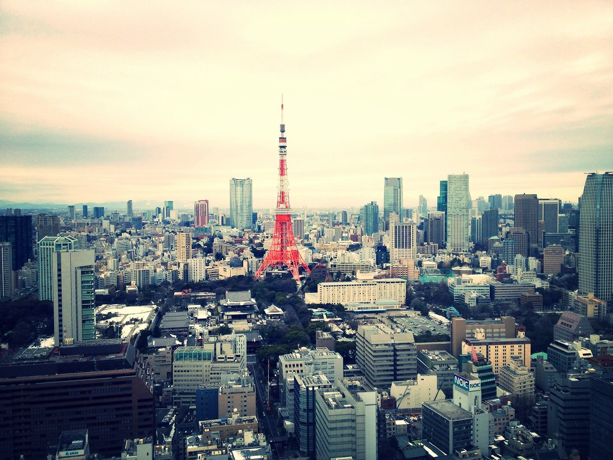

Attractions
The Sensoji temple situated close to the Matsuchiyama temple in Asakusa is the oldest temple in Tokyo and is a place everyone should visit if they have the opportunity as it is a truly remarkable place and it is free to enter.
Meiji Shrine is a Shrine or more commonly known as a temple, situated close to the Harajuku station making it easily accessible by commute. Meiji Shrine Surrounded by about 120,000 trees makes for a calming and enjoyable experience with the park being situated at the heart of Tokyo. If you would like to learn more about the history of the temple you can visit the Meiji Shrine museum for 1000 yen.
Tokyo Tower is what you might believe it is, it is in fact a tower towering over the city of Tokyo. The Eiffel Tower of Tokyo standing at an astonishing height of 333 meters above sea level makes it the second tallest building in Tokyo and also a great viewing point for those who want to experience the city of Tokyo from above. At around 900 yen for adults and 350 for children younger than 4, for what it is worth, the Tokyo Tower is definitely something you should visit.